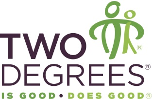

My Story
-
B.S. General Engineering
Class of 2012
I was first exposed to the technology startup scene when I was selected to attend a week long workshop in Silicon Valley with U of I's Technology Entrepreneurship Center my senior year. On the trip we learned about the basics of technology entrepreneurship by visiting startups and hearing founders and investors speak.
I was also was able to combine two of my passions (travel and entrepreneurship) when I was at U of I by participating in a foreign exchange program with a Croatian university through Entrepreneurs Without Borders. I got to learn a lot about Croatia's social and business culture when traveling there and staying with a host family.
-

Campus Director
September 2011 - May 2012
My first experience working with a startup was my senior year of college when I was the sales and marketing rep at U of I for Two Degrees, which is a one-for-one food company based in San Francisco. I enjoyed working for a socially conscious startup and learned a lot about sales/marketing, however, it was through this experience that I realized sales/marketing wasn't for me.
-
Business & Systems Integration Analyst
July 2012 - May 2014
I first became interested in front end development when I joined Accenture during the Java application training I took. As part of the training we had to create an event registration application. While the primary focus of the training was on Java, I was more interested in developing the front end of the application. I started learning HTML, CSS and Javascript on my own outside of work for the next two years at Accenture.
After the Java training, I joined my first project as a business analyst. While my main responsibility was to create requirements for a web application, I again found myself wanting to design/build the front end of the application I was creating requirements for, so I started working closely with the UX and development teams.
-
Product & Design Student
Summer 2014
I left Accenture to enroll in the Product & Design track at SIC so I could pursue a job as a front end developer at a startup. At SIC, I am not only gaining technical skills in the latest front end technologies, such as HTML5, CSS3, jQuery, and Twitter Bootstrap, but I am also developing the soft skills needed to become a valuable employee at a startup.
Projects
Earlybird MVP
Designed and developed the UI for a minimal viable product for a web application for Earlybird, which is a design/dev shop for startups in Chicago. Used HTML, CSS, jQuery, and Bootstrap to create the MVP.
Klatt Website Redesign
Redesigned a marketing website for Klatt Temporary Service, which is a temp staffing agency based in Chicago. Used HTML, CSS, and Bootstrap for the redesign.
Experiments

"VICE Maps"
Designed and developed an interactive dashboard of VICE documentaries using HTML, CSS, JavaScript, and a few Google APIs.
"Achieving Success through Failure"
Created a video compilation using Adobe Premiere of successful individuals speak on their personal failures.
Wrote a post on Two Degrees' main blog using Simon Sinek's "Start With Why" leadership philosophy to describe the company's mission.